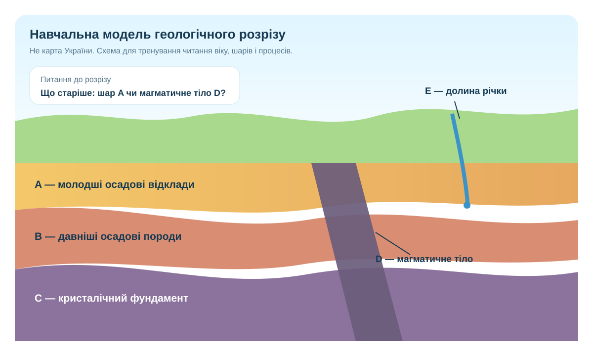

Як прочитати минуле, якого ніхто не бачив?
Геолог не має відеозапису утворення Українського щита чи наступу льодовика. Замість цього є породи, їхній вік, взаємне залягання, викопні рештки, розломи, форми рельєфу та карти.
Один колір на карті — ще не висновок. Спершу читаємо легенду, потім просторове розміщення, далі зіставляємо з іншою картою або розрізом.
Шкала часу — не календар, а система подій
Це навчальне узагальнення. Для конкретної ділянки вік перевіряють за геологічною картою та її легендою.
Геологічна карта ≠ звичайна карта поверхні
1) На сучасній карті знайдіть Карпати, Кримські гори, долину Дніпра. 2) На геологічній карті перевірте, які породи виходять на поверхню в цих районах і якого вони віку.
Державний геологічний портал ↗Держгеонадра ↗
Колір/індекс → вік → тип порід → межі комплексів. Не плутайте геологічний вік із абсолютною висотою та не робіть висновок про «давність рельєфу» лише за віком породи.
Розріз: геологічний детектив у вертикалі

Відносний вік
За принципом нашарування визначте: шар A молодший чи старший за B?
Перетин
Магматичне тіло D перетинає B і C. Що з цього випливає?
Сучасний процес
Долина E врізається у верхні шари. Чому вона не може бути старшою за породи, які розмиває?
Слід льодовика: що саме треба довести?
Шукайте льодовикові та водно-льодовикові відклади, а не просто «рівну поверхню».
Порівняйте їх поширення з північчю та центральною частиною України на тематичній карті.
Зіставте геологічну/геоморфологічну карту з рельєфом і четвертинними відкладами.
Мініпротокол геолога
Карта
Оберіть одну ділянку України на геологічній карті. Запишіть: колір/індекс, вік, тип порід, джерело.
Розріз
Складіть послідовність A–D від найстарішого до наймолодшого та поясніть двома правилами відносного датування.
CER-висновок
C: твердження про геологічне минуле ділянки. E: два докази. R: чому саме ці докази підтримують твердження.
Практична перевірка — 10 балів
Спочатку ідентифікуйте роботу.
Домашнє завдання
Опрацюйте §12. Оберіть одну геологічну подію з історії території України й запишіть: подія → де на карті це видно → який саме доказ → яке обмеження має ваш висновок.
Електронний підручник ↗На Державному геологічному порталі знайдіть шар/карту, пов’язану з геологією вашої області. Сформулюйте одне запитання, на яке цей шар допомагає відповісти, і одне — на яке не допомагає.